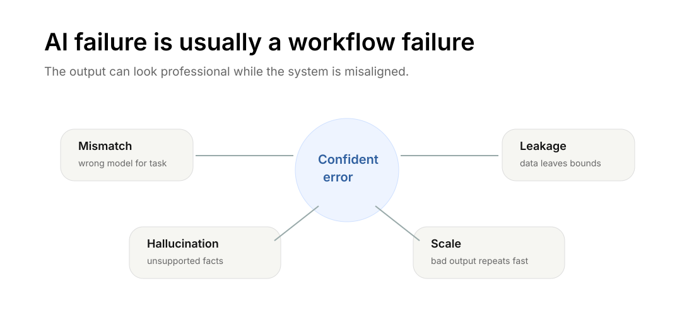

AI Governance for Markets
A market-practitioner note on documenting, testing, monitoring, and challenging AI systems after they move beyond the prototype stage.

The right governance question is not “Can AI do this?” In markets, the question is: can this system be documented, tested, audited, challenged, monitored, and aligned with the firm’s obligations?
AI risk is not only model error. It is also governance failure, documentation failure, security failure, privacy failure, supervision failure, and values failure.
Start by naming the use and the boundary
Every AI workflow should start with a use statement.
Intended use explains what the system is designed to do: summarize alerts, draft internal memos, classify documents, extract fields, retrieve policy, or generate educational explanations.
Prohibited use explains what it must not do: final trade approval, final fraud adjudication, suitability determination, unreviewed client communication, account restriction, or autonomous execution.
This distinction protects the firm and the user. It also makes testing possible. You cannot validate a system if you do not know what it is supposed to do.
The data boundary is part of the model
A market AI system should have a source inventory. The firm needs to know what data the system can access, who owns it, whether it is public or confidential, whether it is current, how it is permissioned, whether retrieval crosses users or teams, and whether prompts and outputs are stored.
Many AI failures are not model failures. They are access-control failures.
Testing has to include the workflow
Testing should cover more than average accuracy. A financial workflow has to test factual accuracy, retrieval precision, hallucination behavior, policy consistency, numerical sanity, privacy behavior, bias concerns, ambiguous cases, adversarial inputs, and escalation behavior.
A model that performs well on normal examples may still fail on the cases that matter most.
Deployment is the beginning of governance
AI systems drift. Data changes, users change, products change, policies change, and model providers update systems. Governance cannot stop at launch.
Monitoring should preserve prompt and output logs, model version, retrieval sources, user edits, approval rates, error reports, escalation patterns, drift indicators, and post-incident reviews.
If the system cannot be monitored, it should not be relied on for important workflows.
Human review has to be real
Human-in-the-loop does not mean a person casually glances at the answer. It means an accountable reviewer has enough evidence, source context, and authority to approve, reject, or modify the output.
For high-impact decisions, the reviewer should see the model output, source evidence, uncertainty flags, missing information, validation checks, and the reason escalation was triggered.
Human review must be meaningful, not ceremonial.
Try to break it before users do
Red teaming means intentionally trying to break the workflow before real users do. For brokerage AI, that means testing prompt injection in retrieved documents, requests for confidential data, attempts to bypass escalation, false policy citations, misleading market narratives, adversarial client messages, and tool actions outside permission scope.
The goal is not to prove the model is smart. The goal is to discover where it fails.
Agents need stricter governance than chatbots
An AI chatbot that drafts text is risky. An AI agent that can use tools, access files, call APIs, send messages, or place orders is much riskier.
Agents require stronger controls: least-privilege permissions, sandboxing, action confirmation, tool allowlists, rate limits, transaction limits, logging, rollback procedures, and independent monitoring.
The more the AI can do, the less trust should be implicit.
For brokers, governance is supervision
For brokers, AI governance is part of supervision. A firm using AI must understand where it fits into communications, recordkeeping, privacy, cybersecurity, trading controls, and supervisory procedures. The system should be reviewed before deployment and monitored afterward.
A good operating principle is: if it cannot be documented, tested, audited, challenged, and aligned with firm values, it should not be deployed into a brokerage workflow.
For traders, governance is discipline
For traders, governance sounds corporate, but the personal version is direct: know what the tool is allowed to do, avoid unnecessary credentials, keep a trade journal, require source links for claims, separate analysis from execution, use hard risk limits, and review mistakes.
Without governance, a trader risks automating impulse instead of discipline.
For builders, governance belongs beside the code
Practitioners should write governance artifacts alongside code: intended and prohibited use, data-source inventory, access-control matrix, test plan, monitoring plan, incident response plan, model-change log, human-review procedure, and retirement criteria.
This is not bureaucracy. It is how AI becomes infrastructure.
The professional takeaway
A compact governance loop works across market-facing AI workflows: define what the tool is for, define what it must not do, control sensitive data, check sources, review before acting, and keep a record of important decisions.
The more important the decision, the more governance it deserves.
Takeaway
AI governance is not anti-innovation. It is what lets AI safely enter real workflows. In markets, the winning systems will not be the flashiest prototypes. They will be the systems that can be documented, tested, audited, challenged, monitored, and trusted under stress.